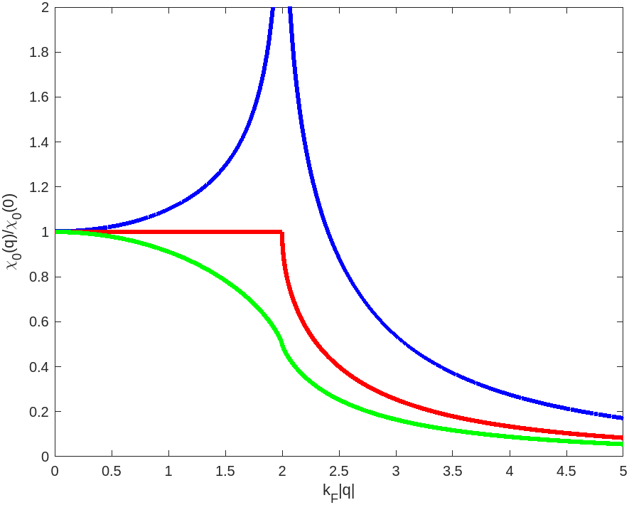

Presented at:
- May 2025 – Moiré Materials Magic Workshop, Flatiron Institute, New York
- December 2024 – Mathematical Physics and PDEs, Herrsching (version presented there; see also the talk)
- January 2024 – Workshop on Model Systems in Quantum Mechanics, Toulouse
\[ \def\ep{\varepsilon} \def\bm{\bf} \def\si{\mathrm{si}} \def\coloneqq{:=} \]
Abstract
When a defect potential is placed in a material, the material rearranges and the total potential at long-range is screened by the electrons. In the finite temperature reduced Hartree-Fock model, small defects are completely screened [2]; the total change in potential decays exponentially. On the other hand, in metals at zero temperature, the presence of the Fermi-surface introduces non-analytic behaviour into the independent-particle susceptibility \(\chi_0\), leading to what are known as Friedel oscillations; the total potential oscillates and decays algebraically, with exponent depending on the dimensionality.
Here, you can find links to the references that are cited in the poster:
References
- Michael Greenblatt. Resolution of singularities, asymptotic expansions of integrals and related phenomena. Journal d’Analyse Mathematique 111.1 (2010), pp. 221–245. [doi] [arXiv]
- Antoine Levitt. Screening in the Finite-Temperature Reduced Hartree–Fock Model. Archive for Rational Mechanics and Analysis 238.2 (2020), pp. 901–927. [doi] [arXiv]
- Antoine Levitt and Jack Thomas. Locality in the reduced Hartree–Fock model. Unpublished manuscript.
- Bogdan Mihaila. Lindhard function of a d-dimensional Fermi gas (2011). [link]
- George E. Simion and Gabriele F. Giuliani. Friedel oscillations in a Fermi liquid. Physical Review B 72.4 (2005). [doi]
- Elias M. Stein. Harmonic Analysis. Princeton University Press, Dec. 1993. [link]
- Jens Lindhard. On the properties of a gas of charged particles. Dan. Mat. Fys. Medd. 28, no.8 (1954).
- Table of Integrals, Series, and Products. Elsevier, 2015. [link]
Here are some additional details not on the poster, including a section on the results for the free electron gas:
Introduction
Suppose we have a lattice \(\mathcal R \subset \mathbb R^d\) and an associated unit cell \(\Gamma\). Define \(L^2_{\mathrm{per}} \coloneqq \{ f \in L^2(\Gamma) \colon f \text{ is }\mathcal{R}\text{-periodic}\}\). For a fixed periodic potential \(W_{\mathrm{per}} \in L^2_{\mathrm{per}}\), associated Fermi level \(\ep_{\mathrm{F}}\), consider the response to an effective potential \(V\): \[ \begin{align} \rho_V(x) &= F_{\ep_{\mathrm{F}}}\big(-\Delta + W_{\mathrm{per}} +V \big)(x,x) \nonumber \\ &= \rho_0(x) + \chi_0V(x) + \cdots \tag{1}\label{eq:rho-exp} \end{align} \] where \(F_{\ep_{\mathrm{F}}}(x) \coloneqq \big( 1 + e^{\frac{x - \ep_{\mathrm{F}}}{k_\mathrm{B}T}}\big)^{-1}\) is the Fermi-Dirac distribution with temperature \(T\geq0\) and \(\chi_0\) is the independent particle susceptibility operator, describing the linear response to the density of a non-interacting system of electrons.
In the linear model the interaction between the electrons is neglected and we consider \(V = V_{\mathrm{def}}\), whereas the reduced Hartree-Fock model takes the form \[ \begin{align} V = V_{\mathrm{def}} + \big( \rho_V - \rho_0 \big) \star |\,\cdot\,|^{-1}. \tag{2}\label{eq:rHF} \end{align} \]
Finite temperature
In the finite temperature case (\(T>0\)), the response \(\rho_V - \rho_0\) decays “as quickly as” \(V\): That is, we have \[ V \in L^2_N \,\,\Rightarrow\,\, \rho_V - \rho_0 \in L^2_N, \] where \(L^2_N \coloneqq \{ \phi \colon (1 + |x|^2)^{\frac{N}{2}} \phi \in L^2\}\). Moreover, the asymptotic behaviour of \(\rho_V - \rho_0\) is given by the first term of the expansion: \[ \rho_V - \rho_0 - \chi_0 V \in L^2_{2N} \] for all \(V \in L^2_N\). One is therefore able to apply a fixed point argument to \(\eqref{eq:rHF}\) to conclude that small defects are completely screened: \(V(V_{\mathrm{def}})\) decays exponentially [2].
Zero temperature
At zero temperature, the Fermi surface leads to fundamentally different behaviour: all terms in the expansion \(\eqref{eq:rho-exp}\) oscillate and decay algebraically with rate depending on the Fermi surface. Here, we consider the behaviour of \(\chi_0\) for the free electron gas. This behaviour more generally follows from the corresponding behaviour of the Green’s function (see poster).
Free electron gas
We may compute \(\chi_0\) explicitly in Fourier space: The expression \(\chi_0(q) = \int_{\mathcal B} \frac{f_{k+q} - f_k}{\ep_{k+q} - \ep_k} \mathrm{d}k\) leads to [4] \[ \begin{align} \chi_0(q) &= -c_d k_{\mathrm{F}}^{d-2} u_d\big( \tfrac{|q|}{k_{\mathrm{F}}} \big), \qquad \text{where} \\ u_d(q) &:= \begin{cases} \frac{1}{q} \log \left| \frac{2 + q}{2 - q} \right| &\text{if } d=1 \\ 1 - \Theta( q - 2 ) \sqrt{1 - \frac{4}{q^2}} &\text{if } d=2 \\ 1 + \frac{4 - q^2}{4q} \log \left| \frac{2 + q}{2 - q} \right| &\text{if } d=3, \end{cases} \tag{3}\label{eq:ud} \end{align} \] \(\Theta = \bm 1_{[0,\infty)}\) is the Heaviside function, and \(c_1 = \tfrac{1}{\pi}\), \(c_2 = \tfrac{1}{2\pi}\), \(c_3 = \tfrac{1}{4\pi^2}\). In this case, \(\chi_0\) is known as the Lindhard function [7]. In particular, \(\chi_0(q)\) is smooth away from points \(q = \bm k_1 - \bm k_2\) that connects two points of the Fermi surface \(\bm k_1 \not= \bm k_2 \in S(\varepsilon_{\mathrm{F}})\) where the tangent planes are parallel. For the free electron gas, this occurs on the sphere \(|q| = 2 k_{\mathrm{F}}\). For \(d = 1\), the logarithmic divergence is responsible for the Peierls instability, whereas \(\nabla\chi_0(q)\) has inverse square root and logarithmic singularities in dimensions \(2\) and \(3\), respectively.

Computing the Fourier transform explicitly, one can show that \(\chi_0(x)\) oscillates and has \(|x|^{-d}\) decay: \[ \begin{align} \chi_0(x) &= \left\{\begin{matrix} \tfrac{1}{2\pi} \si \, 2k_\mathrm{F} |x| \quad &\text{if } d = 1 \\ \tfrac{1}{8\pi} k_{\mathrm{F}}^2\big[ J_0 Y_0 + J_1 Y_1\big]( k_\mathrm{F} |x| ) &\text{if } d = 2 \\ \tfrac{1}{4} \tfrac{1}{(2\pi)^3}\big[ 2 k_\mathrm{F} \cos2 k_\mathrm{F} |x| - \frac{\sin2 k_\mathrm{F} |x|}{|x|} \big] |x|^{-3} &\text{if } d = 3 \end{matrix} \right\} \\ &= \tfrac{1}{2} k_\mathrm{F}^{d-2} \frac{\sin (2k_{\mathrm{F}} |x| + (d-2)\tfrac{\pi}{2})}{(2\pi \, |x|)^d} + O\big( |x|^{-(d + 1)} \big) \tag{4}\label{eq:chi_0(r)} \end{align} \] as \(|x| \to \infty\). Here, \(\si(x) \coloneqq - \int_x^\infty \frac{\sin t}{t} \mathrm{d}t\) is the sine integral and \(J_n,Y_n\) are Bessel functions of the first and second kind, respectively. Using the asymptotic behaviour of these special functions [8] we obtain \(\eqref{eq:chi_0(r)}\) as \(|x|\to\infty\).